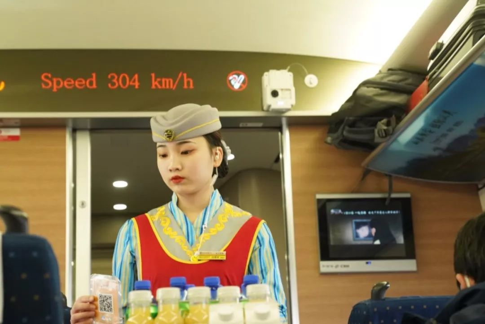
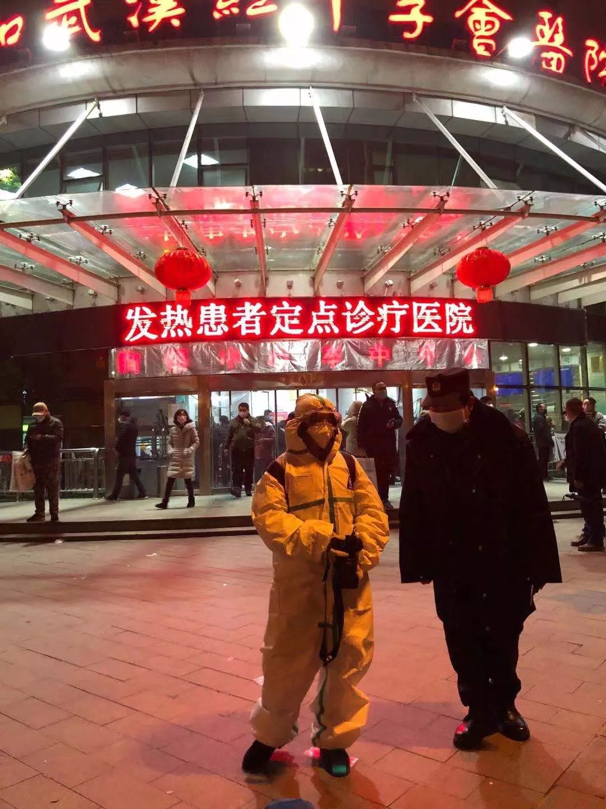
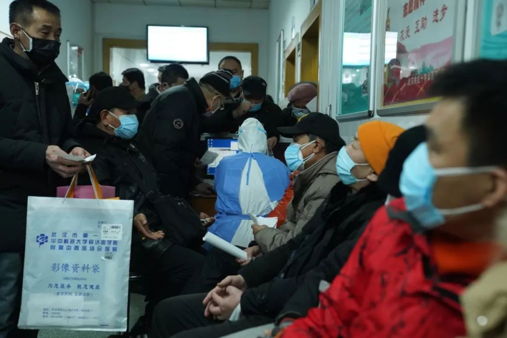
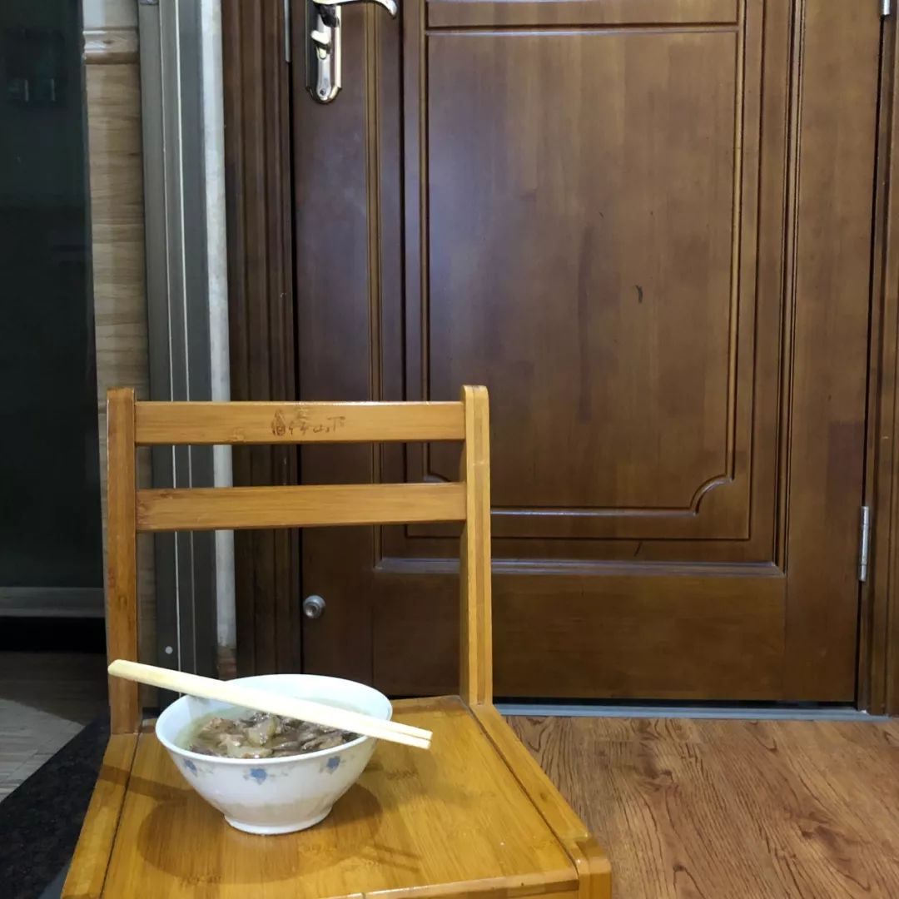
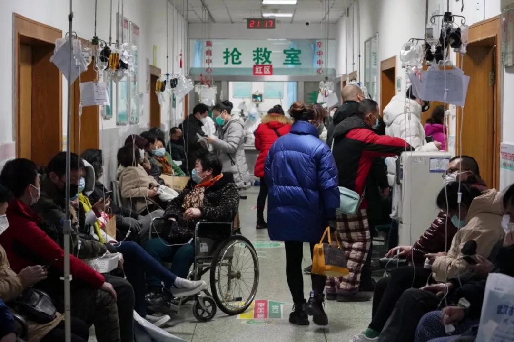
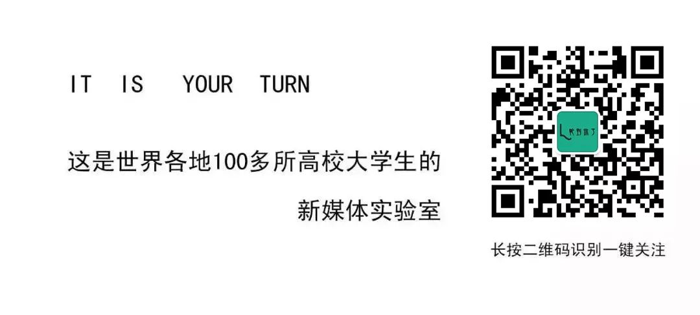
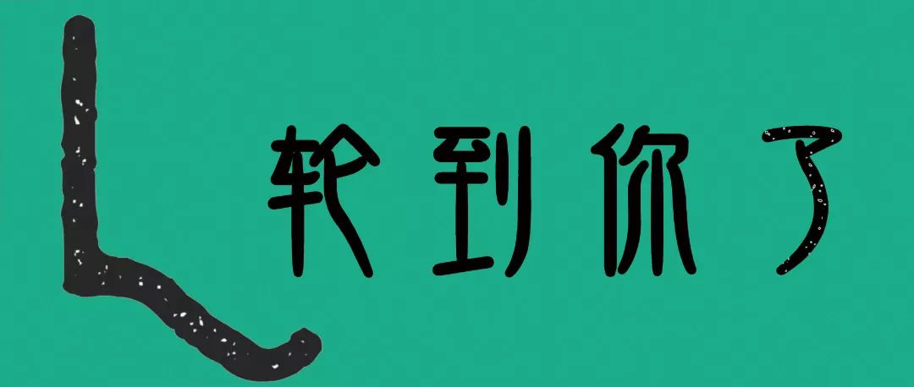

武汉城外的重负：地县乡三级抗疫遭遇的百万返乡潮 | 深度报道
原文链接 备份链接 记者/魏晓涵 实习记者/陈威敬 编辑/刘汨 宋建华 孝感市第一人民医院的医生拆下文件袋作为保护面罩 年初三下午5点，王隆和同事在湖北襄阳去往河南新乡的路上，已经连续开了7个小时车。目的地有一家防护服的生产厂，称可以为他 …
这里是大学生的新媒体实验室 ∆
 再坚持几天，快了……
再坚持几天，快了……
轮到你了按：
这是摄影师蔡颖莉隔离在家的第8天。8天前，她与所供职的财新网7位记者抵达武汉新型冠状病毒疫情现场采访。在经历了14小时的一线拍摄后，被迫在武汉封城前撤离，现在宜春家中隔离。轮到你了联系上了目前体温正常，身体状况良好的蔡颖莉，带我们重回那个没有硝烟的战场，经历一场恐惧的洗礼。

财新图片 蔡颖莉
有谁想去武汉？
轮：你是什么时候被通知要去武汉，前期作了哪些准备？
蔡：1月20日下午，我们领导郭现中老师（财新视觉新闻中心总监）在部门工作群里问大家，“有谁想去武汉？”，我们七位摄影视频记者全部都报了名，实际上领导在委派上左右为难，新闻里不断攀升新冠病人数字，我们都知道其中的风险，我们没有经验，不知道如何既采访到核心现场，又能保护好自己。
最后决定，我和丁刚两位摄影记者，以及领队主编高昱老师还有其他五位记者陆续到武汉汇合。

部分防护用品
我们的防护设备其实是非常短缺的，当时已经很难在实体店购买防护装备了。我们一共八个记者，只有28套防护服，10个护目罩以及为数不多的消毒液和口罩。出发前，我备了三套旧衣服两双鞋，想到万一防护服出问题我就穿一套扔一套，24寸的箱子已被防护用品塞满，还买了很多小瓶子装上消毒液，以备随时消毒，把能想到的防护措施都备好了。当时确实也是非常担忧安全问题，不过也做好打持久战的准备，想着除夕夜和同事们一起驻守在武汉。

8位财新记者抵达汉口
轮：从北京一路到武汉，周围的情绪和氛围如何？
蔡：我是坐着22日早上六点北京开往汉口的高铁，就在我认为如临大敌的时候，车站还有部分没有戴口罩的人群。因为前两天睡眠不充足，我一上车便睡着了，几小时后我被咳嗽声惊醒，发现我的口罩有一边没有戴好，突然一下慌张起来，拿出随身带的免洗消毒液就开始往脸上抹。这个举动还引来邻座一位未戴口罩人士的不解，迎面走来的列车员也没有戴口罩，还是看似祥和。当时我就在脑补韩国电影《流感》的画面，咳嗽者的飞沫喷洒在人群密集的空气中，大家都难以抵挡这猝不及防的飞沫，一路忐忑。
不过时间越往后推，我看见大家越来越紧张，从20号到22号，各种肺炎新闻铺天盖地，我所见的北京到武汉，大家都开始警惕起来了，几乎没有不戴口罩的人了。

1月22日，北京前往汉口的高铁上，一位未戴口罩售卖饮料的列车员| 财新记者 蔡颖莉
移动的病毒源
轮：到武汉首先去了哪些现场，情况怎么样？
蔡：22日中午12点一刻到的汉口站，还是看见有一些人没有戴口罩。按照之前的安排，我和文字记者萧辉老师一组，后来我们先去了武汉天河机场，大家基本带上了口罩，让我非常惊讶的是这个时候了，居然还有马上出发去日本的旅游团。还碰到一家人从武汉老家飞往深圳过年，妈妈手里抱着六个月大的孩子。年轻的妈妈在不断地给孩子整理口罩，但孩子太小了，还是太大戴不住，这样的防护效用看着令人担忧。
 1月22日武汉天河机场为孩子整理口罩的妈妈 | 财新图片 蔡颖莉
1月22日武汉天河机场为孩子整理口罩的妈妈 | 财新图片 蔡颖莉
蔡：之后我们去了发热患者定点的红十字协会医院，这里离华南海鲜市场仅两公里。我们起初到了住院部，几乎没有什么人，气氛一度诡异，询问患者和医生这里是否疑似病例或确诊病例，得来的回应语焉不详。之后我们看见“非请勿入”的呼吸科病区，一位全副武装的大夫和我说，“情况随时在变，现在确诊的都送到金银潭医院。” 那个时候我们都没有穿防护服，仅戴了口罩和手套。
走到门诊大厅时，看到突如其来的发热病患蜂拥而至扎堆等待检查，我们立即走出门诊部，找了一位发热患者家属在医院附近的蛋糕店采访。当时我身边有位戴口罩的中年男子，他说自己也是等待检查的患者，家离华南海鲜市场非常近，一边说还一边咳嗽。那一瞬间我肾上腺素飙升，连忙起身把防护装备穿戴好。
穿着防护服、戴着口罩、眼罩、手套的蔡颖莉
蔡：这时候眼前的门诊医院就像是疫情的漩涡中心，我独自到了门诊部，这里患者越来越多，门诊大厅被挤得水泄不通，医护人员被吞噬在巨大的发热患者人群中，这里的医生戴了防目面罩，但还有几位医生只戴了两层薄薄的口罩而已。这时候有两位医生正在给刚来的医护人员穿戴防护服，重重包裹下只露出了这位医护人员的焦虑的眉眼。
期间有患者冲到我的前面说“这里没有办法确诊，太容易交叉感染”诸如此类的泣诉。120救护车两位医护人员对我说，目前这里没有办法确诊，也不能把人接走，白跑了两趟空车。
我被人群挤进了“红区”抢救室，这里的病人看似更严重，他们躺在病床上输液，鼻腔插上了管子。就在门口，一位老人躺在临时搭建的病床上，带着薄薄的一层口罩，我没有看到驻守在旁边的家属，他的眼里噙着泪水，就这么一直望着我，那个时候我差点没能忍住眼泪。

武汉协和红十字会医院一位等待检查确诊的老人| 财新记者 蔡颖莉
这次情况的后续就是记者萧辉老师写《发热患者定点医院里的故事》，“不能检测，就不能确诊，不能确诊就很难住院。不能住院，就没办法检测。” 发热患者们这样扎堆排队等待检查，这样交叉感染的机率实在太大了，并且这家医院离华南海鲜市场仅两公里不到。这仅仅是武汉其中一家定点医院，这样的移动病毒源是一个严重的隐患，如果不及时安置这些发热病患，只会成倍扩散，后果不堪设想。

武汉协和红十字会医院，排队等候检查的发热病患及家属们| 财新记者 蔡颖莉
轮：什么时候被通知要撤回？
蔡：在武汉的时间非常短，拍完发热门诊后回去消毒，领导当时和我们商量要不要回去，开始不想撤离，他也在陆续安排和指导我们工作，但没有想到的是十几分钟后，我们看到了武汉23日上午10点封城的消息。勇气最终还是向实际情况妥协，在防护物资这么匮乏的情况下，别无选择，所以特别无奈和遗憾。
当晚三点左右，我们主编高昱老师开车将我们送到了汉口站，八位记者有五位离开。
当时我很犹豫，不知道是回北京还是选择回老家，出于隔离条件考虑，我还是选择回老家，当时特别担心自己要是感染了会传给父母，他们年过五十，特别担忧，我也不知道我的选择是否是对的，最后半夜四点给我父母打的电话，让他们等天一亮就去市委社区报备。

1月23日，父母穿着雨衣当防护服来车站接我
本户有新型冠状病毒肺炎患者密切接触者！！！
轮：现在的隔离是如何进行的？状况如何？
蔡：当天下午我到了老家，父母穿着雨衣戴着口罩手套来接我，给我和我的行李消毒，小城里买不到防护服他们就以雨衣代替，报备后社区的工作人员也跟一路跟随。我就隔离在自家带有卫生间的主卧里，父母会戴着口罩和手套，把一日三餐放在我隔离的房门口。
隔离第一天，父母将一碗鸡汤放在我的隔离房间的门口，这把小凳子就是隔离期间父母和我的传递工具
蔡：市医院的医护人员也联系了我，让我每天上午将测量的体温汇报给她，中间还有一次亲自上门体测。隔离的日子里我的体温都保持在36度左右，精神状态也很好。但每天看着新闻，实在是坐立难安。
就在27号晚上，我家门口还贴着“本户有新型冠状病毒的肺炎患者密切接触者！！！”的纸条，电梯和本单元门口也各贴了一张，就连对面十分熟络的邻居也把常年放在门外的鞋柜搬进了室内。有人也拍了照发在在我家小区的业主群里，搞得整个群里的业主都弄得气氛尴尬又慌张，也不仅仅是我家这一户，还有很多武汉返乡的本地人都碰到了这个情况，第二天他们商讨之后，上午还是把纸条给撕了，这件事弄得我父母心里有些不舒服，但还是没有办法，单位后来都安排他们延后上班了。
我也并非孤立，当天我在微信上看到其他小区也贴出类似纸条，其中有一则通告，上面大致写着，“某小区有武汉返乡人员，要求自我检测，请各位居民监督，如有发现该户出入，及时报告”。也就是当天，本市的一个乡镇传言确诊了一位病例，并将与该病例接触过的人都做了详细登记，制成excel表格在各个微信群里转发。
在网上看到太多这样的案例，极端的比比皆是，没想到自己也成了其中的一员，这种感觉特别复杂。民众的情绪到了一个亢奋的高潮，自己还算幸运的一员，想着那些可能的疑似患者，本身就被潜在病毒和心理压力所支配，如此一来遭受的歧视、驱逐以及隐私泄漏，那种悲观我特别能感同身受。

1月27日晚，我家门口贴上的纸条
一次恐惧的洗礼
轮：你之前有没有参加过类似的报道？对2003年的非典还有印象吗？
蔡：我参加波及范围及严重程度如此之大的公共事件还是第一次。2003年的非典那时候我还在读小学，只记得那年春天每天都要测量体温后才能上课，仅存这种量体温记忆还是没能让我有这种历史参与感。
这次仅仅14个小时的一线经历，让我彻底经历了一次恐惧的洗礼，以及明确了传达给公众现场实况是多么重要，虽然非常短暂，但我这次拍下发热定点医院面对的这种特别棘手有待解决的问题，也不枉费自己这次前往一线的机会。

财新记者 蔡颖莉
轮：这次参加一线的报道，最大的感触是什么？
蔡：从20号拐点的开始，因恐惧让我变得特别敏感害怕，每一根神经都紧绷着，我没有参与过如此重大的公共报道，也没有经验，特别害怕什么也没拍到就被感染了。我们前行的几位年轻记者没有经过这方面的培训，当时最早去一线的记者因为没穿防护服就去了发热门诊，因此受到严重的批评。
来到现场之后我才发现最可怕的是周遭的一片祥和，你不知道背后究竟暗涌着多少可怕的病毒，何时会趁机进入你的体内。如果不是出于当时的恐惧，可能我也不会当时不顾他人眼光而穿上那套防护装备，在当时那么危险的环境下，我可能因为自己的恐惧而自救了。
在之后因为媒体的参与报道，大众掌握真相、信息更多了，尽管迅速蔓延的疫情让人恐惧，但最终还是迅速唤起了广大民众的警惕性，在这期间我能明显能感受到因为实时报道而改变其中的变化。真相不是造成恐慌和悲剧的源头，无知和封闭才是。

财新记者 蔡颖莉
采编 | 青木
蔡颖莉
2015 四川美术学院新媒体图片摄影硕士
现就职于财新传媒（北京） 从事摄影记者工作


原文链接 备份链接 记者/魏晓涵 实习记者/陈威敬 编辑/刘汨 宋建华 孝感市第一人民医院的医生拆下文件袋作为保护面罩 年初三下午5点，王隆和同事在湖北襄阳去往河南新乡的路上，已经连续开了7个小时车。目的地有一家防护服的生产厂，称可以为他 …
原文链接 备份链接 桐柏县中心医院 作者供图 作者李强 这次肺炎疫情爆发后，我在老家陆续出现了一些这场疫情中经常被提及的症状。 我的老家是河南省南阳市桐柏县，离武汉仅200多公里。2020年1月23日，农历猪年腊月二十九，我开始干咳、 …
原文链接 备份链接 封城第三天，小雨连绵，潮湿阴冷。这两天都没出门，通知跨江交通封停，汉口汉阳和武昌开始隔离，分开管控，早上站在窗边，十五分钟，路上没有一辆轿车，像以前举办马拉松实行交通管控，全程封路，中途驶过一个蓝衣外卖员，看着像饿了么 …
原文链接 备份链接 《战疫口述记》，是燃财经在新型冠状病毒肺炎期间推出的特别栏目，记录疫情亲历者的观察和感受。本文为第3篇，查看前2篇请点击《农村这样防肺炎》《我在武汉战肺炎》。 作者 | 苏琦 金玙璠 孟亚娜 唐亚华 孔明明 魏佳 …
原文链接 备份链接 据相关数据统计，春节前，有近500万人离开武汉，他们中有近30%的人离开湖北，他们或出差、或进行计划许久的旅行，或回家过年，但伴随着疫情的加剧，他们成了一群「不被欢迎的人」。 一位武汉的小学老师已经连续三年去厦门过年， …